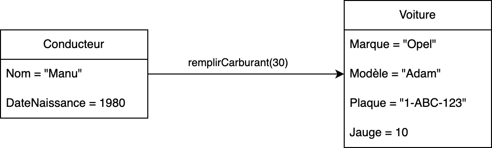

class: center, middle # Programmation orientée objet : # objets et classes <img height="200px" src="img/php_logo.png"> --- ## Le concept d'objet Dans le monde réel, les objets sont partout. Tout objet est caractérisé par : * **un état** : des propriétés et leur valeur * **un comportement** : des actions invocables --- ## Le concept d'objet L'intérêt d'une POO, c'est que les objets peuvent interragir entre eux : --  -- --- ## Le concept de classe Pour créer un objet, il faut disposer de son moule càd sa classe. <span style="color: red;">Un objet est un exemplaire "moulé" à partir d'une classe.</span> En PHP, une classe contient deux types d'information : * les **propriétés** ou **variables d'instance** <span style="color: red;">Tous les objets d'une même classe possèdent les mêmes variables d'instance mais avec leur propre valeur</span> * les **fonctions** ou **méthodes** <span style="color: red;">Les méthodes déterminent le comportement possible de la classe</span> --- ## Un exemple concret Situation : un véhicule est caractérisé par une plaque, une marque, un modèle et une jauge d'essence. On doit pouvoir rajouter de l'essence dans le véhicule. ```php class Voiture { // Attributs (variables d'instance) public $jauge; public $plaque; public $marque; public $modele; // Méthodes (comportement) function remplirCarburant($quantite) { $this->jauge += $quantite; } function obtenirNomComplet() { return $this->marque . " " . $this->modele; } } ``` → le mot-clé `$this` référence l'objet courant ; il est **obligatoire** --- ## Construire des objets Une fois qu'une classe est bien définie, nous avons donc notre moule... ... mais comment le remplir ? --- ## Construire des objets : l'instanciation Remplir un moule nécessite de l'espace ... mémoire ! → cet espace doit être réservé **manuellement** Se processus se déroule en deux étapes : --- ## Construire des objets : l'instanciation ### Etape 1 : création d'un constructeur Un **constructeur** est une méthode propre à chaque classe. Son rôle, lorsqu'il est invoqué, est de réserver de la place mémoire pour tout nouvel objet que l'on crée. ```php class Voiture { // Attributs d'instance public $jauge; public $plaque; public $marque; public $modele; // Constructeur function __construct($jauge, $plaque, $marque, $modele) { $this->jauge = $jauge; $this->plaque = $plaque; $this->marque = $marque; $this->modele = $modele; } // ... (autres méthodes) } ``` --- ## Construire des objets : l'instanciation ### Etape 2 : invocation du constructeur **Invoquer** un constructeur consiste à réserver de l'espace mémoire pour **un seul objet** particulier. → utilisation du mot-clé `new` ```php new Voiture(10, "1-ABC-123", "Opel", "Adam"); ``` --- ## Manipuler des objets Construire des objets c'est bien beau ... mais comment les manipuler ? → autrement dis, *comment interagir avec leur comportement ?* ```php $madeleine->cuire(180); $chien->dormir(); $voiture->remplirCarburant(30); // etc. ``` → <span style="color: red;">Tout objet que l'on souhaite manipuler doit être **référencé** par une variable</span> --- ## Manipuler des objets --- ## Manipuler des objets ```php // Instanciations (réservation de l'espace mémoire) $vPicnic = new Voiture(80, "CPS-001", "Toyota", "Picnic"); $vAdam = new Voiture(10, "1-ABC-123", "Opel", "Adam"); $cManu = new Conducteur("Manu", 1980); $cLuc = new Conducteur("Luc", 1998); $cMarcel = new Conducteur("Marcel", 1968); // Manipulations (via le comportement) $vPicnic->remplirCarburant(30); $nomVAdam = $vAdam->obtenirNomComplet(); echo "Nom de la voiture Adam : " . $nomVAdam . "\n"; ``` --- ## Accès aux variables d'instances ### Accès en lecture Pour accéder à la valeur d'une v.i, on **pourrait** utiliser la syntaxe suivante : ```php $objet->variable ``` Par exemple, si on souhaite afficher la plaque d'une voiture : ```php $vPicnic = new Voiture(80, "CPS-001", "Toyota", "Picnic"); echo "Plaque d'immatriculation : " . $vPicnic->plaque . "\n"; ``` --- ## Accès aux variables d'instances ### Accès en écriture Pour modifier la valeur d'une v.i, on **pourrait** utiliser la syntaxe suivante : ```php $objet->variable = valeur ``` --- ## Accès aux variables d'instances ### Accès en écriture Par exemple, si on souhaite modifier la plaque d'une voiture : ```php $vPicnic = new Voiture(80, "CPS-001", "Toyota", "Picnic"); ``` ```php $vPicnic->plaque = "CPS-002"; ``` --- ## Coding time ! ### Todo : * Exercice 1 (Série 1) <img height="400px" src="img/fast.gif"> --- ## Accès aux variables d'instances On pourrait... MAIS ```php $vPicnic->plaque = "ZOULOU"; ``` ```php $vPicnic->jauge = 1000000000; ``` *Il est dangereux de laisser les attributs d'une classe sans protection !* --- ## Encapsulation et information hiding L'**encapsulation** consiste à regrouper des données et des routines dans une structure unfifiée. Les routines permettent la manipulation de ces données (lecture / écriture). En PHP : * les données sont les variables d'instance (l'état) * les routines sont les méthodes (le comportement) * la capsule est la classe --- ## Encapsulation et information hiding L'**information hiding** est un principe de programmation selon lequel certaines parties d'un programme sont cachées au monde extérieur. --- ## Encapsulation et information hiding L'information hiding en orienté-objet est une **convention fondamentale** : <span style="color: red;font-style: italic;">Principe 1 : toutes les variables d'instance d'une classe doivent être privées</span> ```php class Voiture { // Variables d'instance private $jauge; private $plaque; private $marque; private $modele; //... } ``` --- ## Encapsulation et information hiding L'information hiding en Java est une convention *fondamentale* : <span style="color: red;font-style: italic;">Principe 2 : une classe doit proposer des méthodes d'accès aux variables d'instances, appelées getters (get) et setters (set)</span> ```php class Voiture { // variables d'instance... private $jauge; function getJauge() { return $this->jauge; } function setJauge($j) { $this->jauge = $j; } } ``` --- ## Encapsulation et information hiding Même principe, mais avec les "méthodes magiques". ```php class Voiture { // variables d'instance... private $jauge; function __get($name){ if($name == "jauge"){ return $this->jauge; } } function __set($name, $val){ if($name == "jauge"){ $this->jauge = $val; } } } ``` --- ## Coding time ! ### Todo : * Exercice 2 (Série 1) <img height="400px" src="img/fast.gif"> --- ## Appel de méthodes *comment interragir avec le comportement d'un objet ?* ```php class Voiture { // état ... private $jauge; private $marque; private $modele; // comportement function remplirCarburant($quantite) { $this->jauge += $quantite; } function obtenirNomComplet() { return $this->marque . " " . $this->modele; } } ``` --- ## Appel de méthodes ### Méthodes qui retournent une valeur ```php function obtenirNomComplet() { return $this->marque . " " . $this->modele; } ``` → cette méthode retourne (`return`) la concaténation entre la marque de la voiture et le modèle. → elle retourne donc une valeur de type chaine de caractère (`string`) On peut récupérer cette valeur et la stocker dans une variable : ```php $vPicnic = new Voiture(80, "CPS-001", "Toyota", "Picnic"); $vPicnicNomComplet = $vPicnic->obtenirNomComplet(); ``` --- ## Appel de méthodes ### Méthodes qui ne retournent pas de valeur ```php function remplirCarburant($quantite) { $this->jauge += $quantite; } ``` → cette méthode ne retourne rien : absence du mot-clé `return` → elle se contente de modifier la v.i `jauge` : aucune valeur n'est retournée ```php $vPicnic = new Voiture(80, "CPS-001", "Toyota", "Picnic"); $vPicnic->remplirCarburant(30); ``` --- ## Variable d'instance ou méthode ? → <span style="color: red;">Toute caractéristique dérivable ou calculable à partir d'autres doit être déclarée sous forme de méthode</span> Exemples : * la marque d'une voiture n'est pas dérivable / calculable → variable d'instance * la date de mise en circulation n'est pas dérivable / calculable → variable d'instance * l'âge de la voiture est calculable en utilisant la date de mise en circulation → méthode --- ## Variable d'instance ou méthode ? ### Exercices Voir Kahoot --- ## Portée des variables * Les v.i d'une classe **sont accessibles partout** dans cette classe * Les variables passées en argument dans une méthode / constructeur **sont locales à cette méthode / constructeur** * Les variables déclarées à l'intérieur d'une méthode / constructeur **sont locales à cette méthode / constructeur** --- ## Portée des variables ```php class Entrainement { // Variables d'instance accessibles partout dans la classe private $nomCoureur; private $longueurParcours; private $tempsParcours; // Le constructeur public function __construct($qui, $quoi, $combien) { $this->nomCoureur = $qui; $this->longueurParcours = $quoi; $this->tempsParcours = $combien; } // Méthode pour calculer la vitesse moyenne public function vitesseMoyenne() { // moy est une variable locale : // accessible uniquement dans la fonction vitesseMoyenne() $moy = $this->longueurParcours / $this->tempsParcours; return $moy; } } ``` --- ## Portée des variables ```Java class Entrainement{ // temps est un argument de la méthode : // accessible uniquement dans la fonction comparer() public function comparer($temps) { // temps est un argument de la méthode : // accessible uniquement dans la fonction comparer() return $this->tempsParcours - $temps; } } ``` --- ## Coding time ! ### Todo : * Exercice 3 (Série 1) * Exercice 1 (Série 2) * Exercice 2 (Série 2) * Exercice 3 (Série 2) <img height="400px" src="img/fast.gif"> --- ## Arguments facultatifs / Valeur par défaut Reprenons le code suivant : ```php class Voiture { // Attributs d'instance private $jauge; private $plaque; private $marque; private $modele; // Constructeur function __construct($jauge, $plaque, $marque, $modele) { $this->jauge = $jauge; $this->plaque = $plaque; $this->marque = $marque; $this->modele = $modele; } // ... (autres méthodes) } ``` Comment créer une voiture avec une jauge d'essence vide ? --- ## Arguments facultatifs / Valeur par défaut Comment créer une voiture avec une jauge d'essence vide ? ```php $voit = new Voiture(0, "1-ABC-123", "Opel", "Adam"); ``` Imaginons que, dans le programme, on ait besoin de créer régulièrement des voitures avec une jauge vide... ```php $voit1 = new Voiture(0, "1-ABC-123", "Opel", "Adam"); $voit2 = new Voiture(0, "1-AAA-111", "Toyota", "Picnic"); $voit3 = new Voiture(0, "1-BBB-222", "BMW", "X1"); $voit4 = new Voiture(0, "1-CCC-333", "Renault", "Clio"); // etc. ``` *Un peu redondant... non ?* --- ## Arguments facultatifs / Valeur par défaut Dans ce cas, on peut prévoir une **valeur par défaut** pour la jauge. Cette valeur sera automatiquement utilisée si aucune autre valeur n'est précisée : ```php function __construct($plaque, $marque, $modele, $jauge=0) { $this->jauge = $jauge; $this->plaque = $plaque; $this->marque = $marque; $this->modele = $modele; } ``` → <span style="color: red;">Attention : les arguments facultatifs doivent se trouver après les arguments obligatoires !</span> Utilisation : ```php $voitureJaugeRemplie = new Voiture("1-ABC-123", "Opel", "Adam", 50); $voitureJaugeVide = new Voiture("1-AAA-111", "Toyota", "Picnic"); ``` --- ## Arguments facultatifs / Valeur par défaut ```php //création d'une voiture avec une jauge pleine Voiture voitPleine = new Voiture(50, "1-ZZZ-123", "Kia", "Sportage"); // création d'une voiture avec une jauge vide Voiture voitVide = new Voiture("1-ABC-123", "Opel", "Adam"); ``` --- ## Arguments facultatifs / Valeur par défaut Même principe pour les méthodes... ```php class Voiture { // état ... private $jauge; private $marque; private $modele; // comportement function remplirCarburant($quantite=100) { $this->jauge += $quantite; } } ``` --- ## Coding time ! ### Todo : * Exercice 4 (Série 2) * Exercice 5 (Série 2) * Exercice 1 (Série 3) <img height="400px" src="img/fast.gif"> --- ## Lien entre les objets Repartons de la situation suivante : Pour que le conducteur interagisse avec une voiture, il doit connaître sa référence (son adresse mémoire). → <span style="color: red;">il faut donc prévoir, dans la classe `Conducteur`, une référence vers un objet de type `Voiture`</span> --- ## Lien entre les objets ```php class Conducteur { private $nom; private $dateNaissance; // cette v.i contiendra une référence vers un objet de type Voiture : private $voiture; function __construct($n, $d, $v){ $this->nom = $n; $this->dateNaissance = $d; $this->voiture = $v; } } ``` → dorénavant, pour créer un objet de type Conducteur, il faut également donner une référence vers un objet de type voiture ! ```php $voit = new Voiture(10, "1-ABC-123", "Opel", "Adam"); $conducteur = new Conducteur("Noémie", 2003, $voit); ``` → *"un conducteur possède obligatoirement une voiture"* --- ## Lien entre les objets Une fois que le lien est établi, tout Conducteur peut interragir avec les méthodes de sa Voiture : ```php class Conducteur { private $nom; private $dateNaissance; private $voiture; function seRendreALaPompe(){ // on peut appeler d'autres méthodes ! // $this->insérerCarte(); // $voiture->ouvrirRéservoir(); $this->voiture->remplirCarburant(); } } ``` --- ## Coding time ! ### Todo : * Exercice 2 (Série 3) <img height="400px" src="img/fast.gif"> --- ## La méthode `__toString()` Comme nous l'avons vu, un objet peut avoir de multiples comportements, selon les besoins du programmeur. Il existe un comportement "conventionnel" càd un comportement qui est attendu pour **tous les objets** (peu importe leur type). → ce comportement se nomme `__toString()` → il a pour rôle de "présenter" l'objet en une chaine de caractère → un objet peut alors être utilisé comme une chaine de caractère : la méthode `__toString()` sera exécutée automatiquement --- ## La méthode `__toString()` La déclaration de `__toString()` est **immuable** (elle ne peut pas changer) : ```php class Voiture{ // état (variables d'instance) private $jauge; private $plaque; private $marque; private $modele; function __toString(){ return "La voiture ".$this->marque." ".$this->modele." avec la plaque " .$this->plaque." et une jauge de ".$this->jauge." litres"; } } ``` --- ## Appel implicite de la méthode `__toString()` La méthode `__toString()` est appelée **automatiquement** à chaque fois qu'un nom d'objet apparait là où on attend une chaine de caractère. Par exemple : ```php $v = new Voiture(20, "1-ABC-123", "Opel", "Adam"); echo $v; ``` Donne l'affichage : ``` La voiture Opel Adam avec la plaque 1-ABC-123 et une jauge de 20 litres ``` --- ## Appel implicite de la méthode `__toString()` Autre exemple : ```php $maPremiereVoiture = new Voiture(20, "1-ABC-123", "Opel", "Adam"); $maDeuxiemeVoiture = new Voiture(30, "1-DEF-456", "Citroen", "C3"); $monGarage = "Voici les voitures que je possède : \n" .maPremiereVoiture."\n".maDeuxiemeVoiture; echo $monGarage; ``` Donne l'affichage : ``` Voici les voitures que je possède : La voiture Opel Adam avec la plaque 1-ABC-123 et une jauge de 20 litres La voiture Citroen C3 avec la plaque 1-DEF-456 et une jauge de 30 litres ``` --- ## Coding time ! ### Todo : * Exercice 1 (Série 4) <img height="400px" src="img/fast.gif">